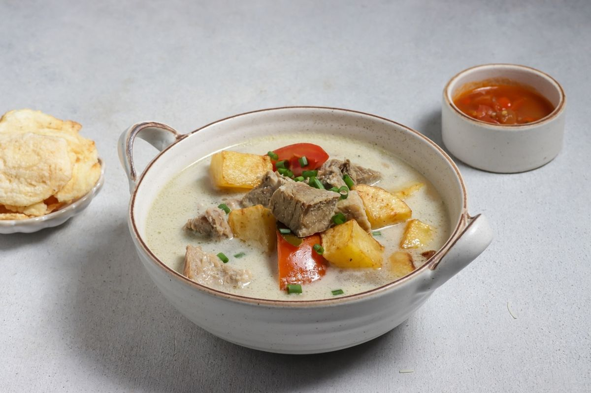
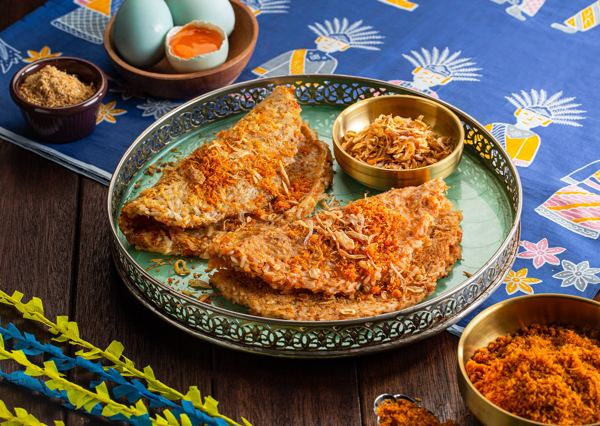
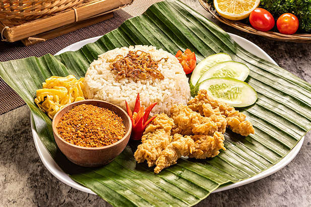
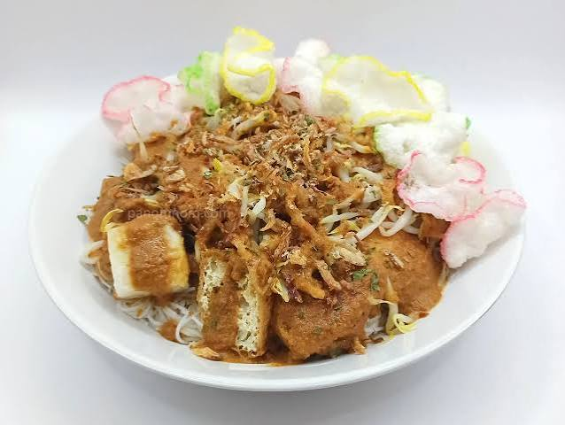
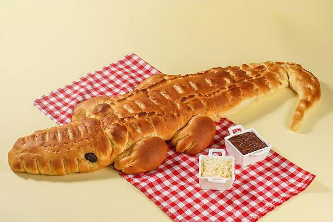

Soto Betawi
A savory soto soup that combines coconut milk or milk with a selection of spices. It is typically served with slices of beef, offal, melinjo crackers, and a sprinkling of fried shallots and fresh tomatoes.

Kerak Telor
This traditional Betawi dish is made with white glutinous rice, chicken or duck eggs, ebi (dried, salted shrimp), and serundeng. It is cooked directly in a skillet over charcoal without oil, giving it a distinctive aroma.

Gado-Gado
A Jakarta-style traditional Indonesian salad consisting of a mix of boiled vegetables, tofu, tempeh, and lontong, topped with a rich, flavorful peanut sauce.

Nasi Uduk
Nasi uduk is one of Jakarta’s most popular traditional dishes. Unlike regular white rice, nasi uduk is cooked with coconut milk, bay leaves, lemongrass, and other spices, giving it a savory and fragrant aroma. Nasi uduk is typically served with a variety of side dishes, such as fried chicken, balado eggs, stir-fried tempeh, and peanut sambal.

Ketoprak
Ketoprak is a simple yet very popular Jakarta dish. It consists of tofu, rice vermicelli, lontong, and bean sprouts, topped with a thick peanut sauce. It has a savory flavor with a hint of sweetness, complemented by crackers and fried shallots that add an interesting texture.

Roti Buaya
Crocodile bread is a traditional Jakarta dish that is typically served at Betawi cultural events, especially weddings. Its shape resembles a crocodile, which symbolizes loyalty.